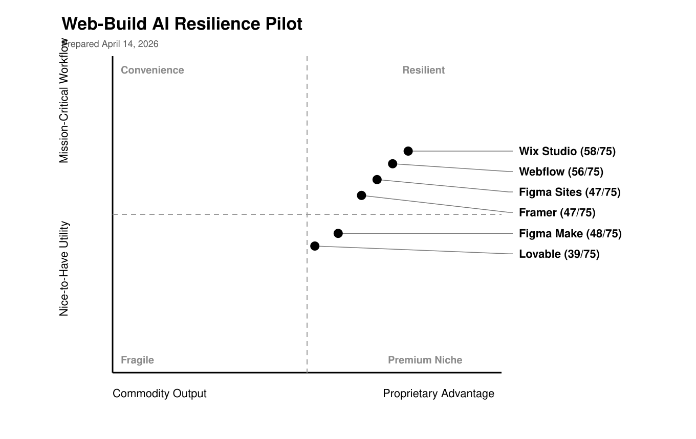
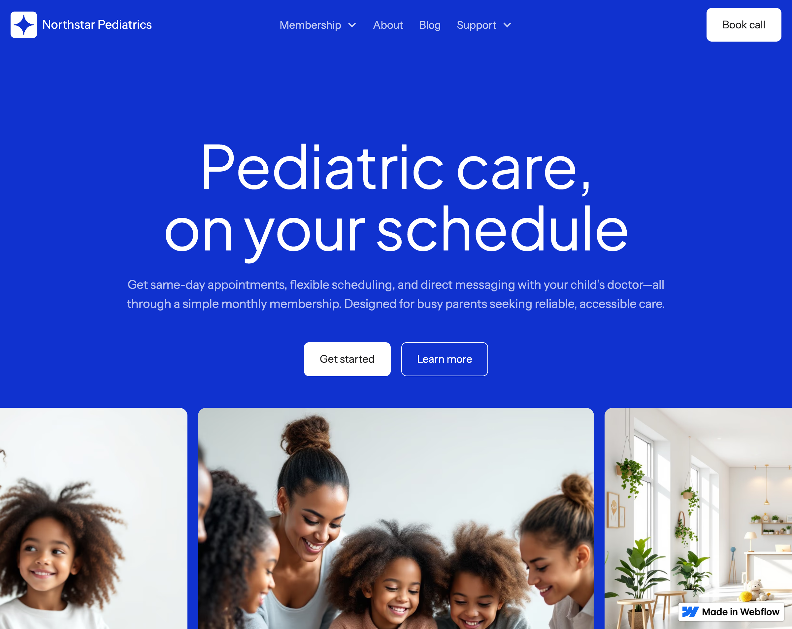
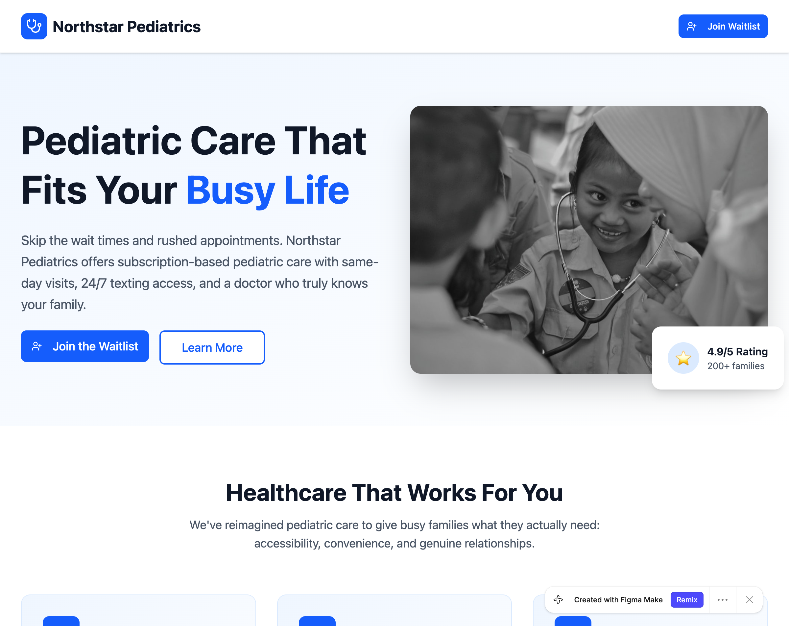
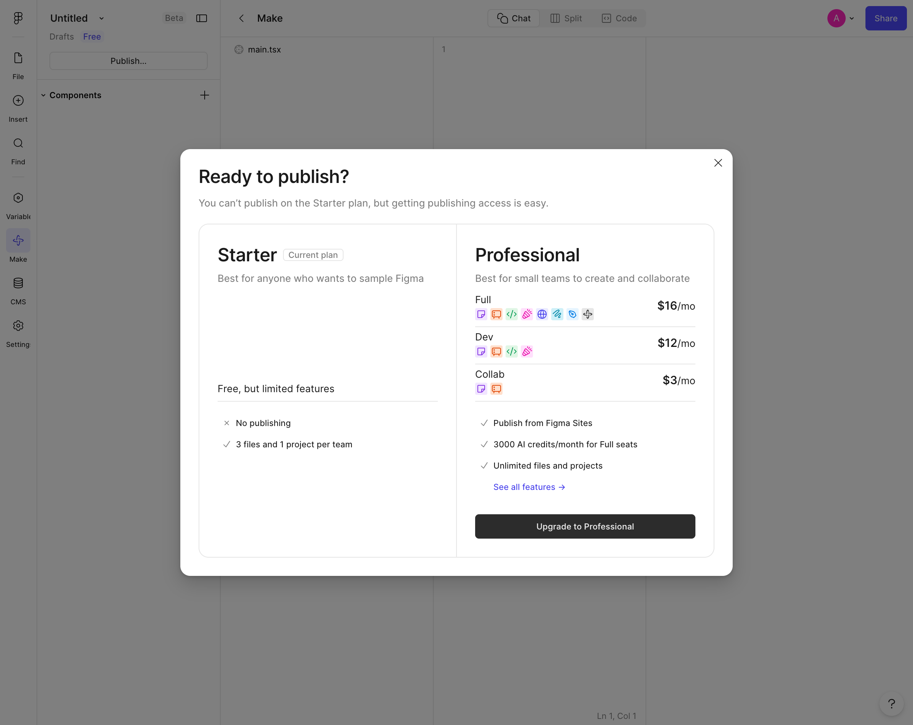
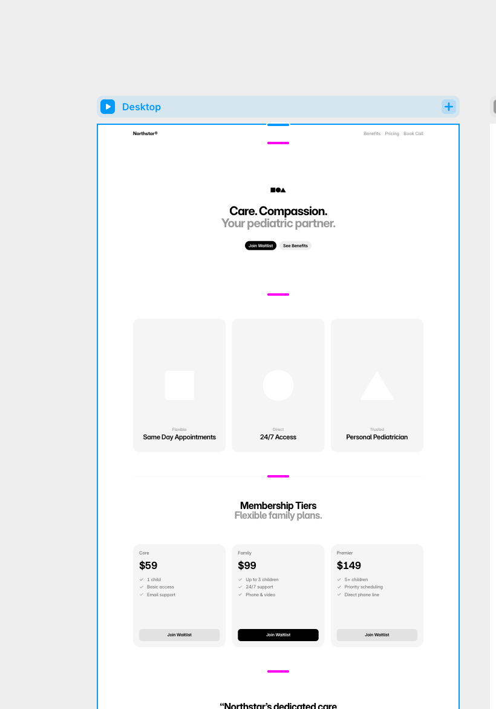
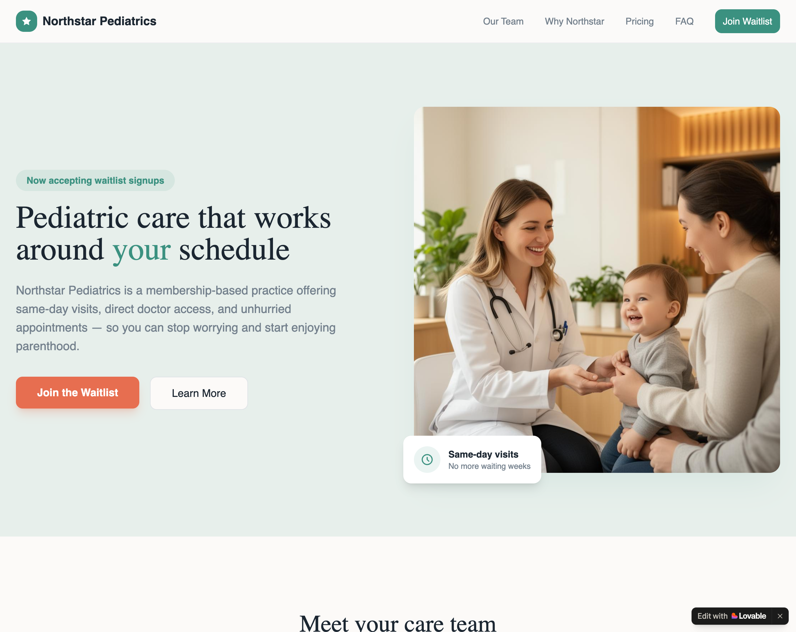

Web-Build Study Visual Memo
This memo is a visual summary of the web-build pilot, not just a gallery of tool outputs. It combines desk-phase scoring with live task evidence so the ranking reflects what actually held up in create, revise, and publish workflows.
Study Design
The unit of analysis is the product offering, not the parent company. The cohort is Figma Sites, Figma Make, Lovable, Webflow, Framer, Wix Studio. The study uses the repository's 15-factor resilience rubric, shared evidence packets, structured desk-rater passes, and empirical task reruns.
- Evidence window: Most recent 12 months for change-sensitive official materials, plus older durable context when necessary.
- Desk phase: 6 standardized evidence packets and 18 structured desk-rater scorecards feed the baseline and consensus totals.
- Task phase: 3 tasks per tool test net-new creation, governed revision, and publish or handoff.
- Method note: `operator_b` is the primary live pass. `operator_a` rows are same-agent replications used to widen empirical coverage and stress-test the rubric, not to claim independent human-operator validity.
Tasks Exercised
The empirical phase pushed every offering through the same three-task protocol. This is the part that turns the study into a stress test of workflow durability rather than a docs-only ranking.
| Task | What Was Tested | Timebox | Prompt | Acceptance Checks |
|---|---|---|---|---|
| Task 1 | Net-new marketing page | 45 min | Create a responsive marketing page for Northstar Pediatrics with a hero, three benefit blocks, a pricing section, a testimonial, and a clear call to action for booking an intro call. | Usable on desktop and mobile, all five required sections present, healthcare-trustworthy tone, and ready for stakeholder review without extra polishing outside the tool. |
| Task 2 | Governed revision and reuse | 60 min | Update the same project so the page supports three membership tiers, reusable testimonial and FAQ content where available, a clinician profile section, and a primary CTA change from booking to join waitlist. | Applied on the same project, uses structured reuse where the tool supports it, preserves a consistent design system, and exposes a clear history or reusable structure rather than manual-only edits. |
| Task 3 | Publish or handoff | 60 min | Prepare the project for launch or developer handoff, publish the best available artifact, and document how a teammate or agent would make the next safe change. | Produces a usable launch or handoff artifact, surfaces versioning or approval behavior where supported, and exercises connector, API, repo, or agent hooks when available. |
Metrics captured: `time_to_first_acceptable_output`, `time_to_completion`, `requirements_pass_rate`, `manual_fix_count`, `structured_reuse`, `publish_success`, `governance_support`, `agent_or_api_leverage`.
15-Factor Rubric Score Matrix
This is the actual empirical-adjusted cohort score table, using the same 15-factor, 75-point rubric used in the individual reports. Each cell is the consensus score for that factor after the task evidence was folded back into the study.
| Factor | Wix Studio58/75 | Webflow56/75 | Figma Make48/75 | Figma Sites47/75 | Framer47/75 | Lovable39/75 |
|---|---|---|---|---|---|---|
| Proprietary Advantage | ||||||
| Context | 4/5 | 3/5 | 3/5 | 4/5 | 3/5 | 3/5 |
| Trust | 4/5 | 4/5 | 4/5 | 4/5 | 3/5 | 2/5 |
| Distribution | 5/5 | 4/5 | 4/5 | 5/5 | 4/5 | 3/5 |
| Judgment | 3/5 | 3/5 | 2/5 | 3/5 | 3/5 | 2/5 |
| Liability / Governance | 4/5 | 4/5 | 3/5 | 2/5 | 3/5 | 2/5 |
| Subtotal | 20/25 | 18/25 | 16/25 | 18/25 | 16/25 | 12/25 |
| Workflow Criticality | ||||||
| Frequency | 4/5 | 4/5 | 3/5 | 4/5 | 4/5 | 3/5 |
| Operational Dependence | 4/5 | 4/5 | 3/5 | 2/5 | 3/5 | 2/5 |
| System Position | 4/5 | 4/5 | 4/5 | 3/5 | 4/5 | 3/5 |
| Switching Cost | 4/5 | 3/5 | 2/5 | 3/5 | 3/5 | 2/5 |
| Budget Durability | 4/5 | 4/5 | 3/5 | 4/5 | 4/5 | 2/5 |
| Subtotal | 20/25 | 19/25 | 15/25 | 16/25 | 18/25 | 12/25 |
| AI Resilience Tests | ||||||
| Model Improvement Test | 4/5 | 4/5 | 5/5 | 4/5 | 4/5 | 4/5 |
| Wrapper Risk Test | 3/5 | 3/5 | 3/5 | 3/5 | 3/5 | 2/5 |
| Agent Readiness Test | 4/5 | 5/5 | 5/5 | 3/5 | 3/5 | 4/5 |
| Accountability Test | 3/5 | 3/5 | 1/5 | 1/5 | 1/5 | 2/5 |
| Outcome Depth Test | 4/5 | 4/5 | 3/5 | 2/5 | 2/5 | 3/5 |
| Subtotal | 18/25 | 19/25 | 17/25 | 13/25 | 13/25 | 15/25 |
| Total | 58/75 | 56/75 | 48/75 | 47/75 | 47/75 | 39/75 |
Empirical Basis
The observed task data supports the rubric's central claim more than it refutes it: prompt-first speed and durable workflow ownership separate meaningfully once the study moves from generation into governed revision and publish-or-handoff steps.
Current consensus totals incorporate both the desk baseline and the observed task evidence. Blockers are treated as evidence about workflow fit, packaging, or governance rather than ignored as noise.
Observed Findings
- Figma Make was the cleanest end-to-end performer in the observed runs, completing all six rows with perfect requirement pass rates and visible versioning plus publish artifacts. That moved it above Figma Sites and Framer in the empirical-adjusted ranking.
- Lovable validated the desk-phase expectation that AI-native builders can win on first-draft speed and in-place revision, but it also surfaced plan-credit and publish-permission friction that kept governance shallower than the raw generation quality suggests.
- Webflow and Wix Studio validated the rubric's emphasis on publish workflow and operational surface. Both produced strong publish outcomes, while their main failures were packaging or revision-flow friction rather than inability to ship.
- Figma Sites underperformed because the live product path we exercised was plan-limited and code-component-first. Framer ended up more mixed: the first authenticated passes missed its AI path, but a follow-on Wireframer rerun validated real AI generation and same-project revision. That keeps Framer below the leaders, but no longer for 'no AI path' reasons.

2x2 Placement Rationale
The x-axis measures proprietary advantage from commodity output to defensible ownership. The y-axis measures workflow criticality from nice-to-have utility to mission-critical operating depth. Placement uses structural judgment informed by the 15-factor scores, not arithmetic alone.
| Offering | Placement | Why It Lands There | Strengths Pulling It Up/Right | Vulnerabilities Pulling It Down/Left | AI Resilience Read |
|---|---|---|---|---|---|
| Wix Studio 58/75 | Upper-right, furthest right in the cohort | Wix Studio owns a wider operating footprint than the other cohort members: AI tools, site editing, business solutions, developer docs, security, and multi-site management all push it closer to a durable web operating platform. | Broad platform surface spanning agencies, enterprise, security, and developer workflows; Explicit AI tooling lives inside a larger system of action rather than replacing it | Visible AI features are still reproducible by competitors; Lower-end website creation remains exposed to commodity builders | Wix Studio remains the strongest resilience candidate in this cohort because the empirical task phase still pointed to the broadest web operating footprint, even though its AI-assisted revision flow fragmented under the study protocol. |
| Webflow 56/75 | Upper-right, close to center | Webflow controls meaningful workflow and platform surface area for web operations, but its visible AI layer is still partially commoditizable. | Real website operating layer with CMS, hosting, and publishing workflow; Benefits from better models inside the platform | AI generation features are easy to replicate; Underlying content and structure are only moderately proprietary | Webflow's empirical read mostly confirmed the desk score: it is defensible because of workflow ownership and platform breadth, even though AI-facing features remain exposed and the observed task blockers came from packaging rather than missing capability. |
| Figma Make 48/75 | Right of center on proprietary advantage, near the workflow midpoint | Make still is not a full web operating platform, but the observed runs validated more durable workflow ownership than the desk pass initially credited, especially around governed revision, versioning, and publishable artifacts. | Prompting can pull in Figma styling context, connectors, and MCP-friendly workflows.; The observed task phase validated clean in-place revision, versioning, and publishable output rather than only first-draft speed. | Workflow depth still looks closer to prototyping than to governed production operations.; Accountability for shipped outcomes remains external. | Figma Make is still not a full web operating platform, but the task phase showed it already behaves like a more durable creation-and-change surface than the desk pass assumed, lifting it above Figma Sites and Framer in the empirical-adjusted ranking. |
| Figma Sites 47/75 | Right of center on proprietary advantage, modestly above the workflow midpoint | Figma Sites retains inherited platform strength from Figma, but the observed product path was template-first or code-component-first and the Starter plan blocked publish, which reduced confidence in day-two governed workflow ownership. | Shared components, variables, and file context carry directly into the website workflow.; Figma's distribution into design and product teams makes Sites easier to adopt than a net-new site tool. | Runtime ownership and business outcomes still happen outside the tool.; Publishing and governance depth look lighter than Webflow or Wix Studio. | Figma Sites remains more resilient than a pure AI website wrapper because of Figma's broader context and distribution, but the empirical task phase lowered the workflow-depth read and moved it behind Figma Make in this cohort. |
| Framer 47/75 | Right of center, near the workflow midpoint | Framer retains real CMS and publish ownership, and the follow-on Wireframer rerun showed a usable AI creation and revision path. The remaining weakness is not absence of AI, but inconsistent discoverability and a lighter publish-governance surface than Webflow or Wix Studio. | Real CMS and publish workflow make Framer more than a one-shot AI site builder.; Plugins, collaboration roles, and custom-domain publishing add operating depth. | The official AI path worked when entered through Wireframer, but it was not surfaced reliably from the first authenticated project routes.; Governance and accountability still look lighter than Webflow or Wix Studio. | Framer remains in the cohort on the strength of a validated Wireframer flow, real in-project AI revision, and real publish mechanics. It still trails the strongest platforms because AI discoverability and launch reliability looked less consistent than the in-editor generation experience. |
| Lovable 39/75 | Near the center-right, below center on workflow criticality | Lovable owns a useful prompt, repo, and deploy loop, yet the workflow still looks easier to substitute than the deeper governance, CMS, and multi-stakeholder operating layers in the cohort leaders. | Fast prompt-to-app creation plus one-click deploy is directly aligned with stronger models.; The product explicitly syncs with GitHub, which is more durable than a sandboxed demo builder. | Public governance and trust posture are much lighter than incumbent platforms.; Free-credit ceilings and publish permissions created real packaging friction during the task phase. | Lovable validated more real workflow depth than the desk pass initially credited, especially around prompt-first generation and in-place revision, but packaging and permission friction kept the overall resilience score mixed rather than improved. |
Empirical Ranking
- Wix Studio 58
- Webflow 56
- Figma Make 48
- Figma Sites 47
- Framer 47
- Lovable 39
Why This Is More Empirical Than A Report
A one-off report tells you what the rubric thinks from desk evidence. This memo also shows how those claims held up once the tools were forced through the same create, revise, and publish sequence. The hero shots below are tied to that empirical read, not to vendor marketing imagery.
Wix Studio
Wix Studio published cleanly in both passes and continued to look like a broad operating platform, which validated the desk ranking. The main empirical weakness was not lack of platform surface but AI-workflow fragmentation during task 2, where Aria suggested adjacent app actions instead of directly applying the governed revision.
2x2 placement: Upper-right, furthest right in the cohort. Wix Studio owns a wider operating footprint than the other cohort members: AI tools, site editing, business solutions, developer docs, security, and multi-site management all push it closer to a durable web operating platform.
What Carries The Score
- Broad platform surface spanning agencies, enterprise, security, and developer workflows
- Explicit AI tooling lives inside a larger system of action rather than replacing it
What Limits The Score
- Visible AI features are still reproducible by competitors
- Lower-end website creation remains exposed to commodity builders
Final verdict: Wix Studio remains the strongest resilience candidate in this cohort because the empirical task phase still pointed to the broadest web operating footprint, even though its AI-assisted revision flow fragmented under the study protocol.
Webflow
Webflow published and shared handoff artifacts cleanly in both observed passes, which validated the platform-depth thesis. The task-2 failures were real, but they looked like free-plan or workspace-state blockers rather than evidence that the underlying workflow surface is thin.
2x2 placement: Upper-right, close to center. Webflow controls meaningful workflow and platform surface area for web operations, but its visible AI layer is still partially commoditizable.
What Carries The Score
- Real website operating layer with CMS, hosting, and publishing workflow
- Benefits from better models inside the platform
What Limits The Score
- AI generation features are easy to replicate
- Underlying content and structure are only moderately proprietary
Final verdict: Webflow's empirical read mostly confirmed the desk score: it is defensible because of workflow ownership and platform breadth, even though AI-facing features remain exposed and the observed task blockers came from packaging rather than missing capability.

Figma Make
Figma Make was the only offering to complete both governed-revision runs cleanly while also publishing versioned artifacts in both passes. That performance validated more workflow depth, governance, and wrapper resistance than the desk baseline assumed.
2x2 placement: Right of center on proprietary advantage, near the workflow midpoint. Make still is not a full web operating platform, but the observed runs validated more durable workflow ownership than the desk pass initially credited, especially around governed revision, versioning, and publishable artifacts.
What Carries The Score
- Prompting can pull in Figma styling context, connectors, and MCP-friendly workflows.
- The observed task phase validated clean in-place revision, versioning, and publishable output rather than only first-draft speed.
What Limits The Score
- Workflow depth still looks closer to prototyping than to governed production operations.
- Accountability for shipped outcomes remains external.
Final verdict: Figma Make is still not a full web operating platform, but the task phase showed it already behaves like a more durable creation-and-change surface than the desk pass assumed, lifting it above Figma Sites and Framer in the empirical-adjusted ranking.

Figma Sites
Both observed runs hit the same product-path mismatch: blank-site creation routed toward Make code components while the alternate path was template-first, and Starter blocked publish. That evidence reduced the workflow-depth read despite Figma's broader platform strength.
2x2 placement: Right of center on proprietary advantage, modestly above the workflow midpoint. Figma Sites retains inherited platform strength from Figma, but the observed product path was template-first or code-component-first and the Starter plan blocked publish, which reduced confidence in day-two governed workflow ownership.
What Carries The Score
- Shared components, variables, and file context carry directly into the website workflow.
- Figma's distribution into design and product teams makes Sites easier to adopt than a net-new site tool.
What Limits The Score
- Runtime ownership and business outcomes still happen outside the tool.
- Publishing and governance depth look lighter than Webflow or Wix Studio.
Final verdict: Figma Sites remains more resilient than a pure AI website wrapper because of Figma's broader context and distribution, but the empirical task phase lowered the workflow-depth read and moved it behind Figma Make in this cohort.

Framer
The follow-on rerun entered Framer through Wireframer and validated the official AI path that earlier authenticated passes missed. Framer generated a Northstar page quickly, then applied the governed revision prompt in the same project through Ask Framer. Publish and View Changes were real, but the public launch artifact looked less stable than the in-editor canvas result.
2x2 placement: Right of center, near the workflow midpoint. Framer retains real CMS and publish ownership, and the follow-on Wireframer rerun showed a usable AI creation and revision path. The remaining weakness is not absence of AI, but inconsistent discoverability and a lighter publish-governance surface than Webflow or Wix Studio.
What Carries The Score
- Real CMS and publish workflow make Framer more than a one-shot AI site builder.
- Plugins, collaboration roles, and custom-domain publishing add operating depth.
What Limits The Score
- The official AI path worked when entered through Wireframer, but it was not surfaced reliably from the first authenticated project routes.
- Governance and accountability still look lighter than Webflow or Wix Studio.
Final verdict: Framer remains in the cohort on the strength of a validated Wireframer flow, real in-project AI revision, and real publish mechanics. It still trails the strongest platforms because AI discoverability and launch reliability looked less consistent than the in-editor generation experience.

Lovable
Lovable validated the prompt-first part of the thesis: it created strong first drafts quickly and completed one full governed revision cleanly. But a daily credit wall and publish permission blocker limited how much durable workflow ownership the study could credit.
2x2 placement: Near the center-right, below center on workflow criticality. Lovable owns a useful prompt, repo, and deploy loop, yet the workflow still looks easier to substitute than the deeper governance, CMS, and multi-stakeholder operating layers in the cohort leaders.
What Carries The Score
- Fast prompt-to-app creation plus one-click deploy is directly aligned with stronger models.
- The product explicitly syncs with GitHub, which is more durable than a sandboxed demo builder.
What Limits The Score
- Public governance and trust posture are much lighter than incumbent platforms.
- Free-credit ceilings and publish permissions created real packaging friction during the task phase.
Final verdict: Lovable validated more real workflow depth than the desk pass initially credited, especially around prompt-first generation and in-place revision, but packaging and permission friction kept the overall resilience score mixed rather than improved.
